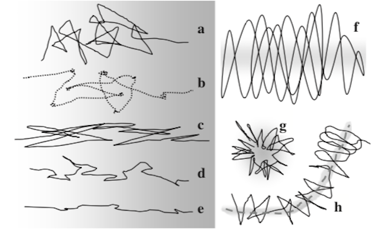
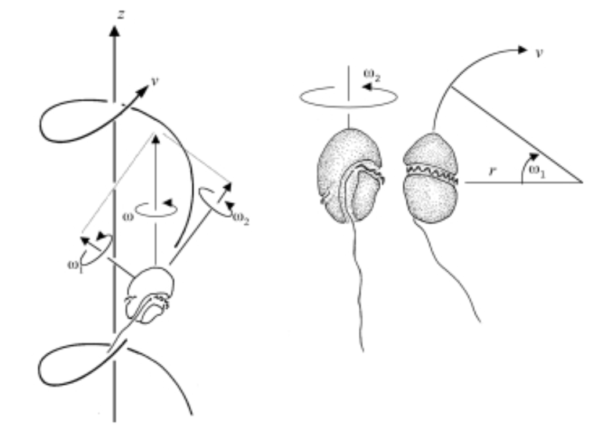
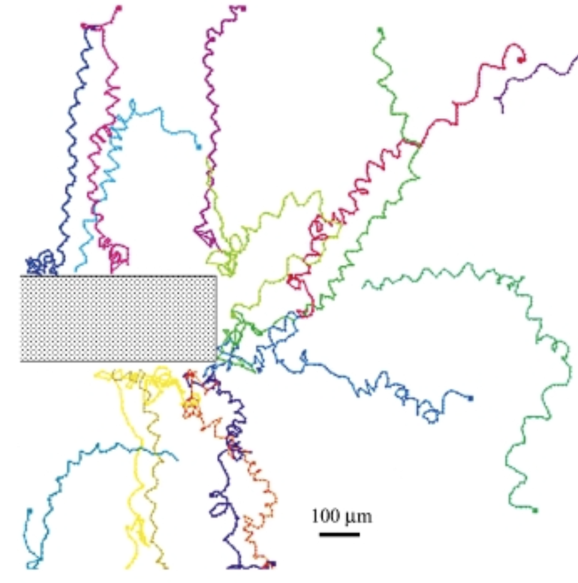

Exercises
How to calculate steady state concentration in a reversible bimolecular reaction?
Earlier in this chapter we learned how to calculate equilibrium concentrations of a reversible bimolecular reaction. It’s time to get some exercise.
Exercise 1: How would the concentration of molecules change before and after the system reaches the steady state?
Exercise 2: We have three types of molecules in the system, A, B, and AB. The molecules could form a complex via reaction A + B → AB, and the complexes could dissociate via reaction AB → A + B. Assume we know that kbind = 3, kdissociate = 3. Currently, the concentrations of each type of molecules are [A] = 95, [B] = 95, [AB] = 5. If we allow the system to continue to react, what are the concentrations of each type of molecules at the steady state?
Exercise 3: Now assume we are at the equilibrium state and add additional 100 A molecules. What reactions would happen to the system and how would equilibrium concentrations change? What if kdissociate = 3 becomes 9 (without the additional 100 A molecules)? Verify your predictions with calculation.
How to simulate a reaction step with the Gillespie algorithm?
We learned that Poisson distribution, exponential distribution, and Gillespie algorithm are behind the BioNetGen simulation. Let’s try to simulate step by step in this way.
Exercise 1: We are interested in the “wait time” between individual reactions. Will wait time be longer or shorter if we have more molecules in the system?
Exercise 2: In the chapter we used counting customers entering the store as an example. Now we will think about a chemical system instead. Say that you are looking at a flask, and you have noticed that on average 100 reactions happen per second. What is the probability that exactly 100 reaction happen in the next second? Now you would like to see how long does it take for the next reaction to occur. How long would you expect to wait? What is the probability that the first reaction occur after 0.02 second?
Hint: What is the λ in your system? What is the mean value of an exponential distribution?
Exercise 3: Now let’s consider a reaction in a very simplified bimolecular reaction system. There are two types of molecules, the ligand L, and the rececptor T. The reaction rate constant for binding is kbind = 1(molecule • s)-1, and for dissociation is kdissociate = 2s-1. Initially, the system contains 10 L molecules and 10 T molecules, and there is no LT present yet. How long would you expect to wait before the first reaction occurs? Is it possible that the first reaction occur after 0.1s? What is your first reaction and what molecules are present in the system after your first reaction? We continue to observe the reaction system after the first reaction occurs. What reactions are possible in the system now? How long would you expect to wait before the next reaction occurs? What are the probabilities of each possible reaction?
Options other than run-and-tumble?
Run-and-tumble is the most studied mechanism of bacterial chemotaxis strategy. However, microorganisms have different sizes, shapes, evolutionary histories, metabolisms, and live in a very diverse range of environments. When we shift our focus to other microorganisms in other environments, run-and-tumble may not be optimal, and many other strategies exist 1.
Exercise 1: What would work better for the organism if: the organism is very small even compared to an E. coli; the organism moves extremely slowly; the organisms could sense the gradient along its body?
 An overview of different chemotaxis strategies. The lighter to darker grayscale gradient indicates lower to higher concentrations. The solid lines indicate the trajectories of the organisms. Screenshot from Mitchell 20061.
The (f) strategy above is called helical klinotaxis, and is often used by larger aquatic microorganisms. One example is dinoflagellates, a single-celled eukaryote found in marine or freshwater habitats (also responsible for the bioluminescent waves at San Diego). Dinoflagellates move along the helical trajectories, while the net direction of movement is along the increasing concentration of attractants. As illustarted in the figure, the rotation of the trailing flagelli produces an angular velocity ω1, and the rotation of the transversal flagelli produces an angular velocity ω2. The net direction of the trajectory is determined by ω1/ω2.
 Dinoflagellate helical klinotaxis details. Screenshot from Fenchel 20012.
 Dinoflagellate helical klinotaxis trajectories. Screenshot from Fenchel 20012.
Exercise 2: What benefit might be associated with this kind of movement?
Exercise 3: On a high level, how to model this strategy?
-
Michell J.G., Kogure K. 2005. Bacterial motility: links to the environment and a driving force for microbial physics. FEMS Microbial Ecol 55:3-16. Available online ↩ ↩2
-
Fenchel T. 2001. How dinoflagellates swim. Protist 152(4):329-338. Available online ↩ ↩2